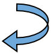
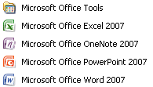
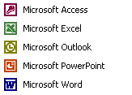

Free
computer Tutorials
|
Free
computer Tutorials
|
|
| home |
|
|||||
Microsoft Word 2007 to 2010How to Open Microsoft Word If you're not sure how to open up Microsoft Word, then do the following. If you have Windows XP the start button looks like this: On the Start menu that appears, click your left mouse button on the All Programs item. On the All programs menu, look for Microsoft Office. If you have Office 2007 (or 2010), you'll see this:  If you have an earlier version of Microsoft Word, you'll see something like this:  If you don't see Word 2007 or Word 2010, then you have an earlier version of the software. In which case, your course is here: Word 2000 to 2003
When Microsoft Word opens, you should a screen something like this one (Word 2007): Microsoft Word Screen - Study this image - ( 60K ) In Word 2010, you won't see the round Office button in the top left. Instead, you'll have an extra item in the top left - the File tab. The main area, all that white space, is the page you type on, just like a piece of paper. The area above the white space is called the Ribbon. The Ribbon contains all the toolbars (known as Tabs) that you can use to brighten up the plain white text on your page. The Tabs are called: Home, Insert, Page Layout, References, Mailings, Review and View. (Word 2010 will also have a File tab, which will be the first item.) Click each of these in turn to see what items are on each tab. When you have finished exploring, click back on the Home tab. The Home tab contains the items you'll use the most, like font formatting, alignment, cut, copy and paste.
In the next lesson, you'll discover how to find your way around Microsoft Word. |
||||||
|